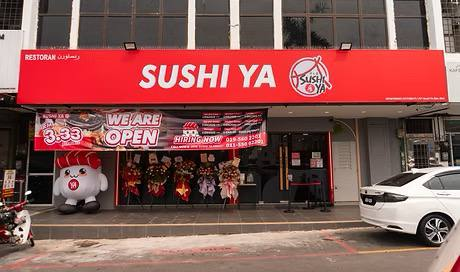

🍜 Kedah Food Trail
Sushi Ya

Sushi Ya offers a variety of Japanese cuisine in a casual and comfortable dining environment.
Known for its selection of sushi, bento sets, rice dishes, noodles, and side dishes, the restaurant provides options suitable for both individual meals and group dining.
Sushi Ya is a popular choice among local diners looking for affordable Japanese food and a relaxed place to enjoy meals with friends and family.
Restaurant Information
📍 Location: 24, 3, K8, Taman Puspa Kencana, 05460 Alor Setar, Kedah, Malaysia.
🕒 Opening Hours: 7:30 AM - 12:30 PM (Daily)
💰 Price Range: RM1 – RM20 (per person)
⭐ Rating: 4.3/ 5
🎥 Quick Restaurant Tour
Take a quick look at the restaurant atmosphere, food presentation and dining experience.
⭐ My Review
My experience at Sushi Ya was enjoyable as the restaurant had a comfortable atmosphere and a good variety of Japanese dishes. The food was served well, tasted satisfying, and the menu offered many choices suitable for different preferences. Overall, it was a pleasant dining experience and a nice place to enjoy a meal with family or friends.